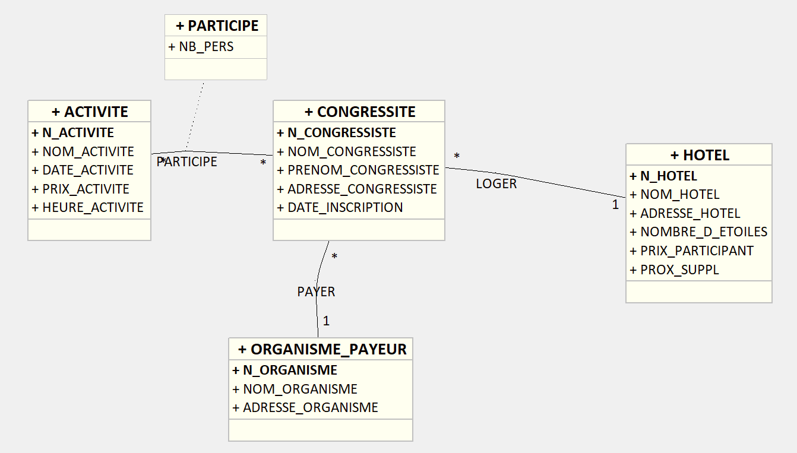
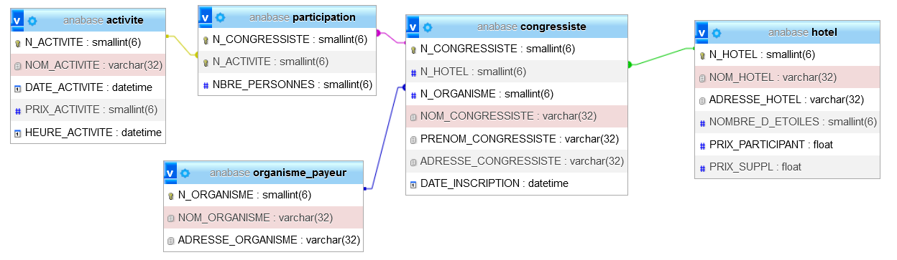

Révision SIO2 : Cas Anabase⚓︎
Pour illustrer ces révisions, j’ai décidé de m’appuyer sur un cas créé dans les années 80 et bien connu des enseignants en informatique : le cas « Anabase » dont voici quelques extraits :
Cas Anabase
Le congrès se déroule sur une semaine de 5 jours ouvrables. Il comporte différentes sessions d’une demi-journée chacune, consacrées à des conférences, débats sur un thème donné.
Un congressiste peut participer à ce congrès envoyé par un organisme (entreprise, administration, université ou lycée) ou non.
Il peut éventuellement être accompagné d’une personne. On suppose qu’un congressiste ne peut pas avoir plus d’un accompagnateur.
Le congressiste est affecté à un hôtel. Chaque hôtel a proposé un prix par participant et un supplément pour l’accompagnateur. Ces prix sont valables pour toutes les chambres d'un même hôtel.
Le bureau d’animation propose des activités culturelles (spectacles, excursions, concerts, visites de monuments...) pour meubler le temps des accompagnateurs et des congressistes qui ont des disponibilités dans leur emploi du temps. Chaque activité est repérée par un code activité, une désignation et un horaire de début et de fin.
Les congressistes et les accompagnateurs peuvent s’inscrire jusqu'à la veille au soir aux activités souhaitées.
1. Modélisation⚓︎
 Etablissez un modèle de donnée à partir des informations données ci-dessus.
Etablissez un modèle de donnée à partir des informations données ci-dessus.
Diagramme de classe

MPD
Le modèle relationnel obtenu est le suivant :

Télécharger fichier Création de la base Anabase 
2. Exercices de requêtes de projection⚓︎
R1
Afficher le nom, la date et l’heure de chaque activité.
SELECT NOM_ACTIVITE, DATE_ACTIVITE, HEURE_ACTIVITE
FROM ACTIVITE;
R2
Afficher les villes dont sont originaires les congressistes
SELECT distinct ADRESSE_CONGRESSISTE
FROM CONGRESSISTE;
3. Exercices de requêtes de sélection⚓︎
R3
Donner la liste des organismes limougeauds.
SELECT *
FROM ORGANISME_PAYEUR
WHERE ADRESSE_ORGANISME = 'Limoges';
R4
Donner les noms et prénoms de congressistes ne dépendant pas d’un organisme.
SELECT NOM_CONGRESSISTE, PRENOM_CONGRESSISTE
FROM CONGRESSISTE
WHERE N_ORGANISME IS NULL;
R5
Donner la liste des congressistes situés dans les hôtels 2 ou 4.
SELECT * FROM CONGRESSISTE WHERE N_HOTEL in (2,3,4);
R6
Donner la liste des activités ayant lieu le 5 ou le 7 juin 2008.
SELECT *
FROM ACTIVITE
WHERE DATE_ACTIVITE = {D '2008-06-05' }
OR DATE_ACTIVITE = {D '2008-06-07' };
R7
Donner la liste des congressistes (nom et prénom) par ordre alphabétique.
SELECT NOM_CONGRESSISTE, PRENOM_CONGRESSISTE
FROM CONGRESSISTE
ORDER BY NOM_CONGRESSISTE, PRENOM_CONGRESSISTE;
R8
Donner la liste des hôtels dont le prix participant est compris entre 35 et 52 €.
SELECT NOM_HOTEL, PRIX_PARTICIPANT
FROM HOTEL
WHERE PRIX_PARTICIPANT between 35 and 52;
R9
Donner la liste des congressistes (nom, prénom) dont le nom commence par un « M ».
SELECT NOM_CONGRESSISTE, PRENOM_CONGRESSISTE
FROM CONGRESSISTE
WHERE NOM_CONGRESSISTE like 'M%';
R10
Donner la liste des congressistes (nom, prénom) dont le nom contient un « A ».
SELECT NOM_CONGRESSISTE, PRENOM_CONGRESSISTE
FROM CONGRESSISTE
WHERE NOM_CONGRESSISTE LIKE '%A%';
R11
Donner la liste des congressistes (nom, prénom) dont le nom finit par un « T ».
SELECT NOM_CONGRESSISTE, PRENOM_CONGRESSISTE
FROM CONGRESSISTE
WHERE NOM_CONGRESSISTE LIKE '%T';
R12
Donner la liste des hôtels dont le prix participant varie entre 35 et 55 € et dont le prix supplément varie entre 20 et 30 €.
SELECT NOM_HOTEL, PRIX_PARTICIPANT, PRIX_SUPPL
FROM HOTEL
WHERE PRIX_PARTICIPANT between 35 and 55
AND PRIX_SUPPL between 20 and 30;
R13
Donner pour chaque hôtel la somme des deux prix (prix participant + prix supplément).
SELECT NOM_HOTEL, PRIX_PARTICIPANT, PRIX_SUPPL, PRIX_PARTICIPANT + PRIX_SUPPL as PRIX_TOTAL
FROM HOTEL;
4. Exercices de requêtes avec fonctions⚓︎
R14
Afficher le nombre total de congressistes.
SELECT count(*) as nombre
FROM CONGRESSISTE;
R15
Afficher le prix moyen d’une chambre à Biarritz et la même chose pour les suppléments.
SELECT AVG(PRIX_PARTICIPANT) as MOY_PARTICIPANT, AVG( PRIX_SUPPL ) as MOY_ SUPPL
FROM HOTEL
WHERE ADRESSE_HOTEL = 'Biarritz';
R16
Afficher pour chaque activité le nombre de personnes l’ayant choisie.
SELECT N_ACTIVITE, COUNT(*) as NB_FOIS
FROM PARTICIPATION
GROUP BY N_ACTIVITE;
R17
Pour chaque congressiste participant à plus de 2 activités, afficher la moyenne du nombre de personnes
SELECT N_CONGRESSISTE,AVG(NBRE_PERSONNES) as moyenne
FROM PARTICIPATION
GROUP BY N_CONGRESSISTE
HAVING COUNT(*) > 2;
5. Exercices de requêtes de jointure⚓︎
R18
Afficher pour chaque congressiste son numéro, son nom et le nom de l’hôtel où il loge.
SELECT N_CONGRESSISTE, NOM_CONGRESSISTE, NOM_HOTEL
FROM CONGRESSISTE INNER JOIN HOTEL
ON CONGRESSISTE.N_HOTEL = HOTEL.N_HOTEL ;
R19
Même résultat que dans R18, mais afficher en plus le nom de l’organisme dont il dépend. Que remarquez-vous ?
SELECT N_CONGRESSISTE, NOM_CONGRESSISTE, NOM_HOTEL, NOM_ORGANISME
FROM CONGRESSISTE INNER JOIN HOTEL
ON CONGRESSISTE.N_HOTEL = HOTEL.N_HOTEL
INNER JOIN ORGANISME_PAYEUR O
ONCONGRESSISTE.N_ORGANISME = O.N_ORGANISME ;
Il faut remarquer que les congressistes ne dépendant d’aucun organisme ne figure pas comme résultat de cette requête basée sur l’égalité des numéros d’organisme.
R20
Afficher pour chaque congressiste son numéro, son nom et le nom de l’hôtel. Restituer cette liste par hôtel et par ordre alphabétique des congressistes.
SELECT NOM_HOTEL, N_CONGRESSISTE, NOM_CONGRESSISTE
FROM CONGRESSISTE INNER JOIN HOTEL
ON CONGRESSISTE.N_HOTEL = HOTEL.N_HOTEL
ORDER BY CONGRESSISTE.N_HOTEL , NOM_CONGRESSISTE;
R21
Même chose que pour R20, mais uniquement pour les congressistes des hôtels de Biarritz.
SELECT NOM_HOTEL, N_CONGRESSISTE, NOM_CONGRESSISTE
FROM CONGRESSISTE INNER JOIN HOTEL
ON CONGRESSISTE.N_HOTEL = HOTEL.N_HOTEL
AND ADRESSE_HOTEL ='Biarritz'
ORDER BY CONGRESSISTE.N_HOTEL , NOM_CONGRESSISTE
6. Exercices de requêtes de requêtes imbriquées⚓︎
R22
Afficher le nom et le prénom des congressistes allant au concert de Jazz.
SELECT Nom_congressiste, prénom_congressiste
FROM CONGRESSISTE
WHERE N_congressiste
IN ( SELECT N_congressiste
FROM PARTICIPATION
WHERE N_activité
IN ( SELECT N_ACTIVITE
FROM ACTIVITE
WHERE NOM_ACTIVITE = 'Concert Jazz' ) );
R23
Afficher le nom et le prénom des congressistes n’allant pas au tournoi de pelote basque.
SELECT Nom_congressiste, prénom_congressiste
FROM CONGRESSISTE
WHERE N_congressiste NOT IN ( SELECT N_congressiste
FROM PARTICIPATION
WHERE N_activité IN ( SELECT N_ACTIVITE
FROM ACTIVITE
WHERE NOM_ACTIVITE = 'Tournoi Pelote basque' ) );
R24
Afficher le nom et le prénom des congressistes ayant choisi une chambre d’hôtel dont le montant par jour est supérieur à 70 euros (prix chambre + prix supplémentaire).
SELECT Nom_congressiste, prénom_congressiste
FROM CONGRESSISTE
WHERE N_hôtel IN ( SELECT N_hôtel
FROM HOTEL
WHERE Prix_Participant + Prix_Suppl > 70 );
R25
Afficher le nom et le prénom des congressistes ayant choisi l’activité la moins chère.
SELECT Nom_congressiste, prénom_congressiste
FROM CONGRESSISTE
WHERE N_congressiste IN ( SELECT N_congressiste
FROM PARTICIPATION WHERE N_activité IN ( SELECT N_ACTIVITE 1
FROM ACTIVITE
WHERE PRIX_ACTIVITE = (SELECT MIN(PRIX_ACTIVITE)
FROM ACTIVITE)) );